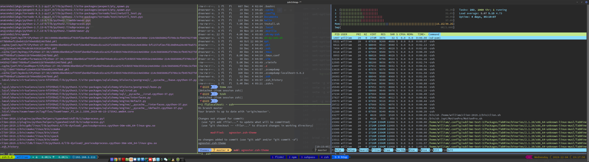

编程如手艺
编程是一门手艺活，仅仅是凭借思而不动、想而不做，是无法完成工作的。我常常把编程比喻成一门手艺活，既需要我们懂得如何设计框架、如何布局，又需要结合实际的材料、配置手中的资源，然后使用娴熟的手艺一点点的认真打磨，最后得到一件称心如意的产品。现在人们喜欢讨论工匠精神，其实是推崇对手艺的尊重，对于一件事情持之以恒的追求。
当然，巧妇难为无米之炊，为了更好的完成工作，我们也需要配合一套得心应手的工具，这些工具犹如我们的左右手，拓展了我们可以活动的想象空间。具体的，在编程领域，我们同样需要一套优良的的开发工具，从而可以极大的提升工作效率。
tmux
安装

# Install tmux 2.8 on Centos
# install deps
yum install -y gcc kernel-devel make ncurses-devel
yum install -y automake.noarch
# DOWNLOAD SOURCES FOR LIBEVENT AND MAKE AND INSTALL
cd /tmp
curl -LOk https://github.com/libevent/libevent/releases/download/release-2.1.8-stable/libevent-2.1.8-stable.tar.gz
tar -xf libevent-2.1.8-stable.tar.gz
cd libevent-2.1.8-stable
./configure --prefix=/usr/local
make -j & make install
# DOWNLOAD SOURCES FOR TMUX AND MAKE AND INSTALL
cd /tmp
curl -LOk https://github.com/tmux/tmux/releases/download/2.8/tmux-2.8.tar.gz
tar -xf tmux-2.8.tar.gz
cd tmux-2.8
LDFLAGS="-L/usr/local/lib -Wl,-rpath=/usr/local/lib" ./configure --prefix=/usr/local
make -j && make install
pkill tmux
# 编译出来的程序在 tmux 目录内，这里假设你还没离开 tmux 目录
cp tmux /usr/bin/tmux -f
cp tmux /usr/local/bin/tmux -f
# close your terminal window (flushes cached tmux executable)
# open new shell and check tmux version
tmux -V
## 如果出现乱码
export LANG=en_US.UTF-8
export LC_CTYPE=en_US.UTF-8
tmux -u
配置
可以通过修改 ~/.tmux.conf 进行设置
#
# author : Xu Xiaodong <xxdlhy@gmail.com>
# modified : 2017 Apr 29
#
#-- base settings --#
## set -g default-terminal "screen-256color"
set -g default-terminal 'linux'
set -ga terminal-overrides ",rxvt-unicode-256color:Tc"
set -sg escape-time 0
set -g display-time 3000
set -g history-limit 65535
set -g base-index 1
set -g pane-base-index 1
set -g renumber-windows on
#-- bindkeys --#
# prefix key (Ctrl+k)
set -g prefix ^k
unbind ^b
bind k send-prefix
# split window
unbind '"'
bind - splitw -v # vertical split (prefix -)
unbind %
#bind | splitw -h # horizontal split (prefix |)
bind \ splitw -h # horizontal split (prefix \)
# select pane
bind k selectp -U # above (prefix k)
bind j selectp -D # below (prefix j)
bind h selectp -L # left (prefix h)
bind l selectp -R # right (prefix l)
# resize pane
bind -r ^k resizep -U 5 # upward (prefix Ctrl+k)
bind -r ^j resizep -D 5 # downward (prefix Ctrl+j)
bind -r ^h resizep -L 5 # to the left (prefix Ctrl+h)
bind -r ^l resizep -R 5 # to the right (prefix Ctrl+l)
# swap pane
bind ^u swapp -U # swap with the previous pane (prefix Ctrl+u)
bind ^d swapp -D # swap with the next pane (prefix Ctrl+d)
# select layout
bind , select-layout even-vertical
bind . select-layout even-horizontal
# misc
bind e lastp # select the last pane (prefix e)
bind ^e last # select the last window (prefix Ctrl+e)
bind q killp # kill pane (prefix q)
bind ^q killw # kill window (prefix Ctrl+q)
# copy mode
bind Escape copy-mode # enter copy mode (prefix Escape)
bind ^p pasteb # paste buffer (prefix Ctrl+p)
unbind -T copy-mode-vi Space
bind -T copy-mode-vi v send -X begin-selection # select (v)
bind -T copy-mode-vi y send -X copy-pipe "xclip" # copy (y)
# app
bind ! splitw htop # htop (prefix !)
bind m command-prompt "splitw 'exec man %%'" # man (prefix m)
bind % command-prompt "splitw 'exec perldoc -t %%'" # perl doc (prefix %)
bind / command-prompt "splitw 'exec ri %%'" # ruby doc (prefix /)
# reload config (prefix r)
bind r source ~/.tmux.conf \; display "Configuration reloaded!"
#-- statusbar --#
set -g status-interval 1
set -g status-keys vi
setw -g mode-keys vi
setw -g automatic-rename off
#-- colorscheme --#
# statusbar
set -g status-justify right
# set -g status-left ""
# set -g status-right ""
#左下角
set -g status-left "#[bg=black,fg=green][#[fg=cyan]#S#[fg=green]]"
set -g status-left-length 20
set -g automatic-rename on
set-window-option -g window-status-format '#[dim]#I:#[default]#W#[fg=grey,dim]'
set-window-option -g window-status-current-format '#[fg=cyan,bold]#I#[fg=blue]:#[fg=cyan]#W#[fg=dim]'
#右下角
set -g status-right '#[fg=green][#[fg=cyan]%Y-%m-%d %H:%M:%S#[fg=green]]'
# -- display -------------------------------------------------------------------
set -g base-index 1 # start windows numbering at 1
setw -g pane-base-index 1 # make pane numbering consistent with windows
setw -g automatic-rename on # rename window to reflect current program
set -g renumber-windows on # renumber windows when a window is closed
set -g set-titles on # set terminal title
set -g display-panes-time 800 # slightly longer pane indicators display time
set -g display-time 1000 # slightly longer status messages display time
set -g status-interval 1 # redraw status line every 10 seconds
set -g status-style "fg=#504945,bg=#282828"
setw -g window-status-current-fg white
setw -g window-status-current-bg red
setw -g window-status-current-attr bright
setw -g window-status-fg cyan
setw -g window-status-bg default
setw -g window-status-attr dim
# window
setw -g window-status-separator " "
setw -g window-status-format "-"
setw -g window-status-current-format "+"
setw -g window-status-current-style "fg=#d79921,bg=#282828"
# pane
set -g pane-border-style "fg=#ebdbb2"
set -g pane-active-border-style "fg=#d79921"
#开启window事件提示
setw -g monitor-activity on
#set -g visual-activity on
## 鼠标设置，不要打开，不然用鼠标选择不了内容
set-option -g mouse on
## =============================================================================
## https://github.com/erikw/tmux-powerline
set-option -g status on
set-option -g status-interval 2
set-option -g status-justify "centre"
set-option -g status-left-length 150
set-option -g status-right-length 120
set-option -g status-left "#(~/opt/.tmux/tmux-powerline/powerline.sh left)"
set-option -g status-right "#(~/opt/.tmux/tmux-powerline/powerline.sh right)"
set-window-option -g window-status-current-format "#[fg=colour235, bg=colour27]⮀#[fg=colour255, bg=colour27] #I ⮁ #W #[fg=colour27, bg=colour235]⮀"
setw -g window-status-style 'fg=colour9 bg=colour18'
setw -g window-status-format ' #I#[fg=colour237]:#[fg=colour250]#W#[fg=colour244]#F '
setw -g window-status-bell-style 'fg=colour255 bg=colour1 bold'
# messages
set -g message-style 'fg=colour1 bg=colour16 bold'
## =============================================================================
## =============================================================================
## 使用 bin++z 实现最大-最小屏
# unbind m
# bind m run ". ~/tmux-zoom "
bind -r a select-pane -t .+1 \; resize-pane -Z
# bind -n C-Space resize-pane -Z
# Ref https://superuser.com/questions/238702/maximizing-a-pane-in-tmux
# #!/bin/bash -f
# currentwindow=`tmux list-window | tr '\t' ' ' | sed -n -e '/(active)/s/^[^:]*: *\([^ ]*\) .*/\1/gp'`;
# currentpane=`tmux list-panes | sed -n -e '/(active)/s/^\([^:]*\):.*/\1/gp'`;
# panecount=`tmux list-panes | wc | sed -e 's/^ *//g' -e 's/ .*$//g'`;
# inzoom=`echo $currentwindow | sed -n -e '/^zoom/p'`;
# if [ $panecount -ne 1 ]; then
# inzoom="";
# fi
# if [ $inzoom ]; then
# lastpane=`echo $currentwindow | rev | cut -f 1 -d '@' | rev`;
# lastwindow=`echo $currentwindow | cut -f 2- -d '@' | rev | cut -f 2- -d '@' | rev`;
# tmux select-window -t $lastwindow;
# tmux select-pane -t $lastpane;
# tmux swap-pane -s $currentwindow;
# tmux kill-window -t $currentwindow;
# else
# newwindowname=zoom@$currentwindow@$currentpane;
# tmux new-window -d -n $newwindowname;
# tmux swap-pane -s $newwindowname;
# tmux select-window -t $newwindowname;
# fi
## --------------------------------------------------
# setw -g window-style 'bg=#262626'
# setw -g window-active-style 'bg=#121212'
# set-option -g pane-active-border-style 'bg=#3a3a3a'
# set-option -ag pane-active-border-style 'bg=#3a3a3a'
# set-option -g pane-active-border-fg colour237
# set-option -g pane-border-fg colour237
# setw -g pane-border-status bottom
# setw -g window-active-style 'bg=#3a3a3a,bold'
## -----------------------------------------------------
## 设置活跃窗口的背景颜色
set-option -ga terminal-overrides ",xterm-256color:Tc"
# setw -g window-style 'bg=#504945'
# setw -g window-active-style 'bg=#282828'
set -g "window-style" "fg=#aab2bf,bg=default"
# set -g "window-active-style" "bg=default"
# setw -g window-style 'bg=#504945'
setw -g window-active-style 'bg=#282828,bold'
## -----------------------------------------------------
set-window-option -g clock-mode-colour colour40 #green
set-option -g pane-border-fg colour10
set-option -g pane-active-border-fg colour4
# toggle pane synchronization
bind s setw synchronize-panes
## =============================================================================
## 安装 tmux plugin
## 在 Tmux 里面使用 prefix + I 安装插件
# prefix + Ctrl-s - save
# prefix + Ctrl-r - restore
set -g @plugin 'tmux-plugins/tmux-resurrect'
## 或者手动安装
## cd ~/Documents
## git clone https://github.com/tmux-plugins/tmux-resurrect
run-shell ~/Documents/tmux-resurrect/resurrect.tmux
## =============================================================================
set -g pane-border-status bottom
set -g pane-border-format "#P #T #{pane_current_command}"
设置窗口显示
#-- base settings --#
## set -g default-terminal "screen-256color"
set -g default-terminal 'linux'
set -ga terminal-overrides ",rxvt-unicode-256color:Tc"
set -sg escape-time 0
set -g display-time 3000
set -g history-limit 65535
set -g base-index 1
set -g pane-base-index 1
set -g renumber-windows on
修改绑定键
原来的绑定是 ctrl+b，总感觉这个有点逆人性，每次按下这两个键的时候整个手掌都是弯曲的，后来就干脆分开使用两只手分别按住一个键，这样就避免了使用单手产生的扭曲感
##-- bindkeys --#
## prefix key (Ctrl+k)
set -g prefix ^k
unbind ^b
bind k send-prefix
分屏
这个是 tmux 的看家本领，允许我们通过快捷键进行屏幕的任意切分，相比于 terminator 的方式要灵活很多。这里我使用了
bind-key（也就是我修改后的ctrl+k），然后按下|进行横向切分bind-key，然后按下-进行纵向切分bind-key，然后按下j：跳转下面屏幕k：跳转上面屏幕h：跳转左边屏幕l：跳转右边屏幕 其实这个方向跟vim的操作是一样的想法，避免了记忆压力。
- 同时，我还可以使用快捷键进行屏幕大小调整。
- 先按下
bind-key（也就是我修改后的ctrl+k） - 然后松开
k，但是不要松开ctrl键（如果松开，就变成了上面的屏幕跳转了） - 接着使用
h、j、k、l进行屏幕大小调整
- 先按下
# split window
unbind '"'
bind - splitw -v # vertical split (prefix -)
unbind %
#bind | splitw -h # horizontal split (prefix |)
bind \ splitw -h # horizontal split (prefix \)
# select pane
bind k selectp -U # above (prefix k)
bind j selectp -D # below (prefix j)
bind h selectp -L # left (prefix h)
bind l selectp -R # right (prefix l)
# resize pane
bind -r ^k resizep -U 5 # upward (prefix Ctrl+k)
bind -r ^j resizep -D 5 # downward (prefix Ctrl+j)
bind -r ^h resizep -L 5 # to the left (prefix Ctrl+h)
bind -r ^l resizep -R 5 # to the right (prefix Ctrl+l)
# swap pane
bind ^u swapp -U # swap with the previous pane (prefix Ctrl+u)
bind ^d swapp -D # swap with the next pane (prefix Ctrl+d)
# select layout
bind , select-layout even-vertical
bind . select-layout even-horizontal
# misc
bind e lastp # select the last pane (prefix e)
bind ^e last # select the last window (prefix Ctrl+e)
bind q killp # kill pane (prefix q)
bind ^q killw # kill window (prefix Ctrl+q)
状态栏显示
作为程序员，我们每天都在与终端打交道，几乎所有的视线就是整个屏幕范围。因此，我当然希望所有的监控状态也同样可以在视野所及范围内都一一收下。tmux 也同样允许我们通过修改配置进行调整
#-- colorscheme --#
# statusbar
set -g status-justify right
# set -g status-left ""
# set -g status-right ""
#左下角
set -g status-left "#[bg=black,fg=green][#[fg=cyan]#S#[fg=green]]"
set -g status-left-length 20
set -g automatic-rename on
set-window-option -g window-status-format '#[dim]#I:#[default]#W#[fg=grey,dim]'
set-window-option -g window-status-current-format '#[fg=cyan,bold]#I#[fg=blue]:#[fg=cyan]#W#[fg=dim]'
#右下角
set -g status-right '#[fg=green][#[fg=cyan]%Y-%m-%d %H:%M:%S#[fg=green]]'
# -- display -------------------------------------------------------------------
set -g base-index 1 # start windows numbering at 1
setw -g pane-base-index 1 # make pane numbering consistent with windows
setw -g automatic-rename on # rename window to reflect current program
set -g renumber-windows on # renumber windows when a window is closed
set -g set-titles on # set terminal title
set -g display-panes-time 800 # slightly longer pane indicators display time
set -g display-time 1000 # slightly longer status messages display time
set -g status-interval 1 # redraw status line every 10 seconds
set -g status-style "fg=#504945,bg=#282828"
setw -g window-status-current-fg white
setw -g window-status-current-bg red
setw -g window-status-current-attr bright
setw -g window-status-fg cyan
setw -g window-status-bg default
setw -g window-status-attr dim
# window
setw -g window-status-separator " "
setw -g window-status-format "-"
setw -g window-status-current-format "+"
setw -g window-status-current-style "fg=#d79921,bg=#282828"
# pane
set -g pane-border-style "fg=#ebdbb2"
set -g pane-active-border-style "fg=#d79921"
#开启window事件提示
setw -g monitor-activity on
#set -g visual-activity on
## 鼠标设置，不要打开，不然用鼠标选择不了内容
set-option -g mouse on
接着，我们需要安装底部状态栏支持插件 tmux-powerline
mkidr -p $HOME/opt
cd $HOME/opt
mkdir -p .tmux
cd .tmux
git clone https://github.com/erikw/tmux-powerline.git
echo '
## =============================================================================
## https://github.com/erikw/tmux-powerline
set-option -g status on
set-option -g status-interval 2
set-option -g status-justify "centre"
set-option -g status-left-length 60
set-option -g status-right-length 150
set-option -g status-left "#(~/opt/.tmux/tmux-powerline/powerline.sh left)"
set-option -g status-right "#(~/opt/.tmux/tmux-powerline/powerline.sh right)"
set-window-option -g window-status-current-format "#[fg=colour235, bg=colour27]⮀#[fg=colour255, bg=colour27] #I ⮁ #W #[fg=colour27, bg=colour235]⮀"
## =============================================================================
' >> $HOME/.tmux.conf
然后在 ~/.tmux.conf 添加如下
## =============================================================================
## https://github.com/erikw/tmux-powerline
set-option -g status on
set-option -g status-interval 2
set-option -g status-justify "centre"
set-option -g status-left-length 150
set-option -g status-right-length 120
set-option -g status-left "#(~/opt/.tmux/tmux-powerline/powerline.sh left)"
set-option -g status-right "#(~/opt/.tmux/tmux-powerline/powerline.sh right)"
set-window-option -g window-status-current-format "#[fg=colour235, bg=colour27]⮀#[fg=colour255, bg=colour27] #I ⮁ #W #[fg=colour27, bg=colour235]⮀"
setw -g window-status-style 'fg=colour9 bg=colour18'
setw -g window-status-format ' #I#[fg=colour237]:#[fg=colour250]#W#[fg=colour244]#F '
setw -g window-status-bell-style 'fg=colour255 bg=colour1 bold'
# messages
set -g message-style 'fg=colour1 bg=colour16 bold'
## =============================================================================
## =============================================================================
## 使用 bin++z 实现最大-最小屏
# unbind m
# bind m run ". ~/tmux-zoom "
bind -r a select-pane -t .+1 \; resize-pane -Z
# bind -n C-Space resize-pane -Z
# Ref https://superuser.com/questions/238702/maximizing-a-pane-in-tmux
# #!/bin/bash -f
# currentwindow=`tmux list-window | tr '\t' ' ' | sed -n -e '/(active)/s/^[^:]*: *\([^ ]*\) .*/\1/gp'`;
# currentpane=`tmux list-panes | sed -n -e '/(active)/s/^\([^:]*\):.*/\1/gp'`;
# panecount=`tmux list-panes | wc | sed -e 's/^ *//g' -e 's/ .*$//g'`;
# inzoom=`echo $currentwindow | sed -n -e '/^zoom/p'`;
# if [ $panecount -ne 1 ]; then
# inzoom="";
# fi
# if [ $inzoom ]; then
# lastpane=`echo $currentwindow | rev | cut -f 1 -d '@' | rev`;
# lastwindow=`echo $currentwindow | cut -f 2- -d '@' | rev | cut -f 2- -d '@' | rev`;
# tmux select-window -t $lastwindow;
# tmux select-pane -t $lastpane;
# tmux swap-pane -s $currentwindow;
# tmux kill-window -t $currentwindow;
# else
# newwindowname=zoom@$currentwindow@$currentpane;
# tmux new-window -d -n $newwindowname;
# tmux swap-pane -s $newwindowname;
# tmux select-window -t $newwindowname;
# fi
## --------------------------------------------------
# setw -g window-style 'bg=#262626'
# setw -g window-active-style 'bg=#121212'
# set-option -g pane-active-border-style 'bg=#3a3a3a'
# set-option -ag pane-active-border-style 'bg=#3a3a3a'
# set-option -g pane-active-border-fg colour237
# set-option -g pane-border-fg colour237
# setw -g pane-border-status bottom
# setw -g window-active-style 'bg=#3a3a3a,bold'
设置活跃窗口
## -----------------------------------------------------
## 设置活跃窗口的背景颜色
set-option -ga terminal-overrides ",xterm-256color:Tc"
# setw -g window-style 'bg=#504945'
# setw -g window-active-style 'bg=#282828'
set -g "window-style" "fg=#aab2bf,bg=default"
# set -g "window-active-style" "bg=default"
# setw -g window-style 'bg=#504945'
setw -g window-active-style 'bg=#282828,bold'
## -----------------------------------------------------
set-window-option -g clock-mode-colour colour40 #green
set-option -g pane-border-fg colour10
set-option -g pane-active-border-fg colour4
# toggle pane synchronization
bind s setw synchronize-panes
## =============================================================================
## 安装 tmux plugin
## 在 Tmux 里面使用 prefix + I 安装插件
# prefix + Ctrl-s - save
# prefix + Ctrl-r - restore
set -g @plugin 'tmux-plugins/tmux-resurrect'
## 或者手动安装
## cd ~/Documents
## git clone https://github.com/tmux-plugins/tmux-resurrect
run-shell ~/Documents/tmux-resurrect/resurrect.tmux
## =============================================================================
set -g pane-border-status bottom
set -g pane-border-format "#P #T #{pane_current_command}"
屏幕右边显示命令执行时间
这个主要为了提醒我们在什么时候执行了操作。其实是通过修改 ~/.oh-my-zsh/themes/agnoster.zsh-theme。不过我把这条放在一起
## 显示命令执行时间
strlen () {
FOO=$1
local zero='%([BSUbfksu]|([FB]|){*})'
LEN=${#${(S%%)FOO//$~zero/}}
echo $LEN
}
# show right prompt with date ONLY when command is executed
preexec () {
DATE=$( date +"[%H:%M:%S]" )
local len_right=$( strlen "$DATE" )
len_right=$(( $len_right+1 ))
local right_start=$(($COLUMNS - $len_right))
local len_cmd=$( strlen "$@" )
local len_prompt=$(strlen "$PROMPT" )
local len_left=$(($len_cmd+$len_prompt))
RDATE="\033[${right_start}C ${DATE}"
if [ $len_left -lt $right_start ]; then
# command does not overwrite right prompt
# ok to move up one line
#echo -e "\033[1A${RDATE}"
# Black='\033[30m' # Black
# Red='\033[31m' # Red
# Green='\033[32m' # Green
# Yellow='\033[33m' # Yellow
# Blue='\033[34m' # Blue
# Purple='\033[35m' # Purple
# Cyan='\033[36m' # Cyan
# White='\033[37m' # White
echo -e "\033[1A\033[36m${RDATE}\033[36m"
else
echo -e "${RDATE}"
fi
}
zsh
传统意义上的 shell 是一款命令解释器，位于操作系统与用户交互之间，主要用来执行用户命令。我们有
sh/bashkshzshfish
一般而言，*nix 操作系统都默认配置了 bash，这是一款古老且强大的命令解释器，不过历史有点老，导致后面的开发不是特别友好。我现在使用的这款 zsh 则进行了独特的创新，采用插件的形式进行组合安装，实现了强大的可拓展能力。